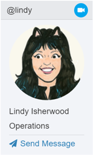

Video and Audio Calling (Beta)¶
Mattermost supports an early preview of video and audio calling option using a self-hosted proxy. The implementation is based on WebRTC integration enabling one-on-one video and audio chat without plugins.
The feature is currently intended as a working prototype for community development and not recommended for production. It is supported on Chrome, Firefox and the Mattermost Desktop Apps on a server running in SSL mode.
Configuring video and audio calls¶
This option can be enabled by the System Administrator in the System Console under Integrations > WebRTC (Beta) - see configuration settings documentation to learn more.
To set up the WebRTC server, you may either
- use a Mattermost docker container created for testing WebRTC
- set up a Janus server to act as the WebRTC gateway and Coturn for STUN and TURN servers for your Mattermost installation.
Starting a video call¶
After enabling the feature in the System Console by a System Administrator:
Go to Account Settings > Advanced > Preview pre-release features and select Enable the ability to make and receive one-on-one WebRTC calls.
Initiate a call with another user by either:
Clicking the video icon on a user’s profile popover, which appears after clicking their profile picture or name on the center channel or right hand sidebar
Clicking the video icon on the channel header of a direct message channel with that user
Troubleshooting¶
As noted previously, video and audio calls are intended as a working prototype for community development and not recommended for production.
To review a list of open video and audio call issues, refer to our existing Jira ticket queue for WebRTC. If the issue is not on the list, try the following troubleshooting steps.
If you are still experiencing problems, post your issue in our Troubleshooting forum or file a bug if it’s a product defect.
There was a problem connecting the video call¶
Confirm video and audio calls were configured successfully and that both users have a good Internet connection.
Unable to access camera or microphone¶
Confirm you have allowed Mattermost to access your camera and microphone. See instructions on how to give permissions on Chrome and Firefox.
User has WebRTC disabled, and cannot receive calls.¶
Confirm that both users have enabled the feature in Account Settings > Advanced > Preview pre-release features